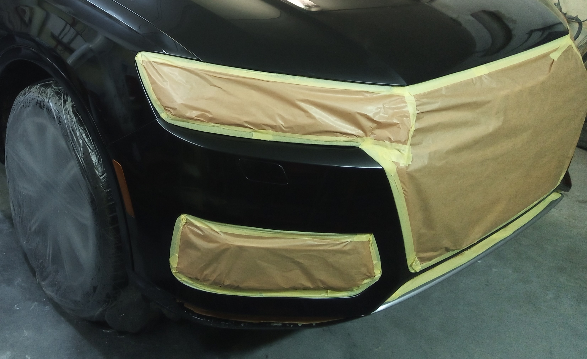

Убираю царапины, возвращаю глубину цвета и блеск. Работаю по записи — собираю заявки и беру машины в работу по очереди.
Валенсия
Работаю не в потоке. Каждая машина проходит полный цикл — от осмотра до финишного результата.
Смотрю покрытие, оцениваю глубину царапин и общее состояние лака.
Мойка, обезжиривание и подготовка поверхности перед работой.
Работаю по зонам, убираю дефекты и возвращаю блеск без перегрева и повреждений.
Проверка результата, удаление остатков и чистый внешний вид.
Все элементы, которые могут пострадать в процессе, защищаются заранее. Резинки, пластик, стекла — ничего не заливается и не портится.
После работы машина остаётся чистой, без белых следов, разводов и лишней грязи.
Вы уезжаете с аккуратным результатом, а не с “доделывать потом”.

Во многих случаях дефекты можно убрать без перекраса — быстрее, дешевле и без риска попасть в цвет.
Полировка стоит значительно дешевле покраски.
Заводское покрытие остаётся на месте — это всегда лучше перекраса.
Не нужно угадывать оттенок и переживать за разницу.
В большинстве случаев всё делается за один этап.
Пример результата
Если повреждение глубокое — скажу сразу. Если можно восстановить без покраски — сделаю это аккуратно.
Отправьте фото — посмотрю и скажу, можно ли убрать дефект полировкой или нужна покраска.
Отвечаю лично, без “менеджеров”.
Если можно сделать проще и дешевле — так и скажу.
Если нужна покраска — тоже скажу сразу, без лишних работ.